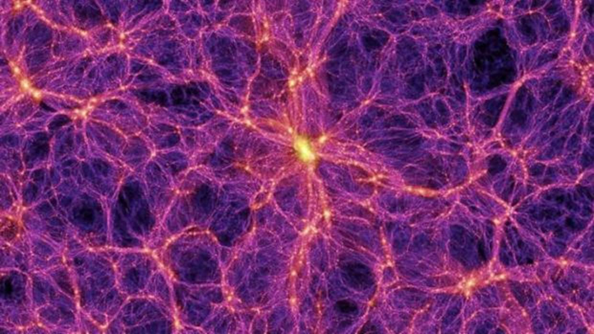
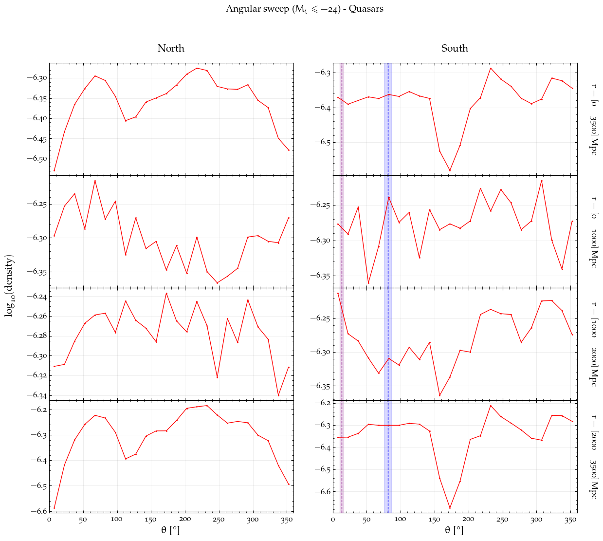
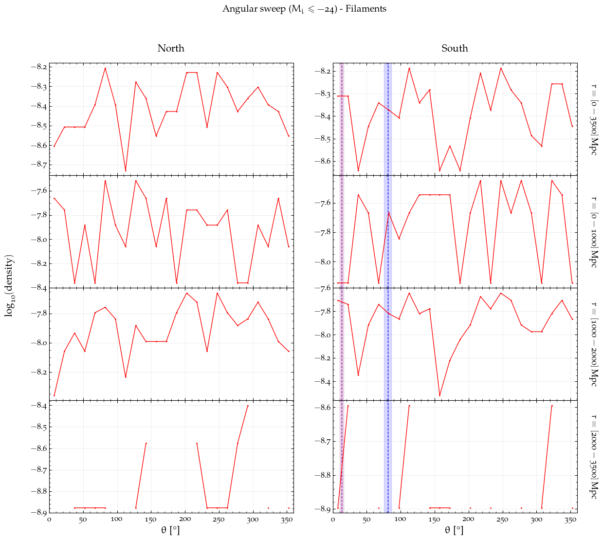
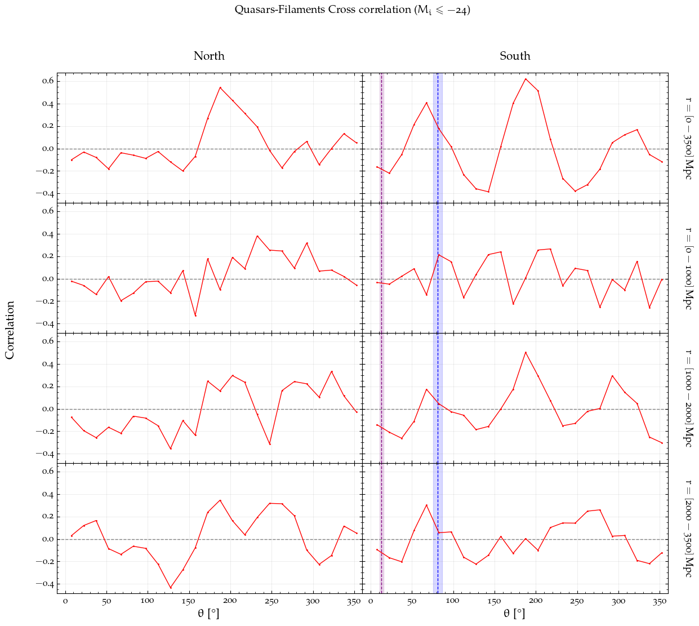
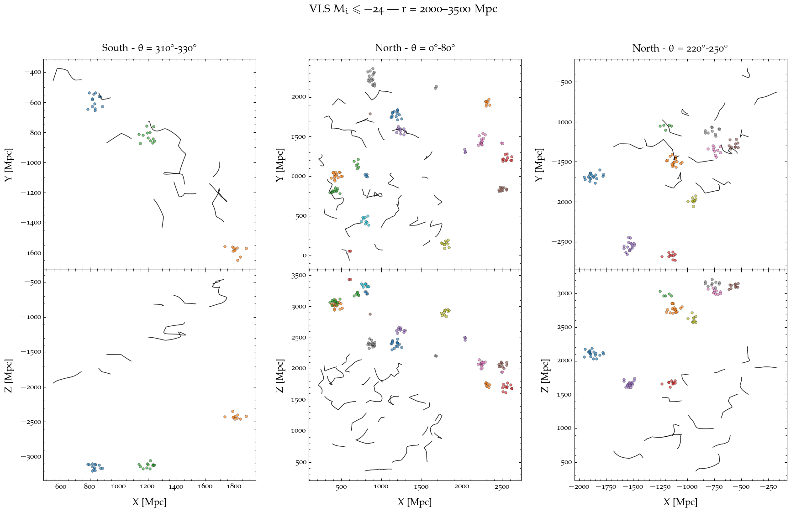

 Diana C. Zapata-Zuluaga
Thesis - Quaia
Abstract
SubQuaia & density field reconstruction
Large-scale structure with DisPerSE
Overdensity analysis
Angular sweep
Select the cut in magnitude:
Mᵢ ≤ -24
Mᵢ ≤ -23
Mᵢ ≤ -22
Quasars

Filaments

Cross correlation function
Select the cut in magnitude:
Mᵢ ≤ -24
Mᵢ ≤ -23
Mᵢ ≤ -22

Spatial distribution
Select the cut in magnitude:
Mᵢ ≤ -24
Mᵢ ≤ -23
Mᵢ ≤ -22
Spatial distribution
